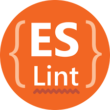

The art of coding has never been so easy! With ESLint, coding is as simple as coloring inside the lines of your own favorite coloring book! Up until now, I had never really framed any of my code on the wall… now that I have published github repositories checked with ESLint, my phone is ringing off the hook from art collectors wanting to print my code for display at fancy dinner parties!!! Even though this might be a fabrication of the truth, my overall point is that now I can meet the standard and I barely have to do anything.
I didn’t realize at the time, but when I first tried to get ESLint working I had no clue what a treat I was in for. Hours and hours of chasing my tail, but unknowingly receiving a major lesson. Initially I watched and followed along to a video on how to modify settings in IntelliJ Idea to prepare for running compatible with ESLint. Honestly, I was following the video of my professor giving the rundown, but not really absorbing what I was even doing. Don’t worry, my time to figure out what I even did was rapidly approaching. After some research, chats with classmates and the TA, I started to realize what I was dealing with. When I started going back through to do the settings once again, I realized through this process, I was understanding why things were placed where in these miles of file paths. I had never even thought about it before. In combination with my knowledge of pointers in C, I realized exactly what all of these settings and options really are and why they are needed. Wow, the basics of how and why software is built the way it is… streaming unconsciously in my cranium.
Great! Now I have all this new knowledge but ESLint is not even working yet. No problem though, I just apply new knowledge to old mistakes and move some files where i know they should go. BAM! 5 hours later, I can finally do the homework I was assigned. Extra Bonus! The homework assignment was really easy after dealing with all of the fun stuff. I copy and paste in some javaScript code:
/**
* How many violations of the AirBnb Javascript Style guide can we pack into one file?
* Created by Philip Johnson on 8/4/16.
*/
var foo = 3;
const car = "Toyota";
const obj = {
car: car,
'foo': 3,
bar: 'this' + 'is' + this.car,
baz: 'b\az'
};
const zumba = obj['car'];
const stuff = new Array();
function f(){};
function zob(param) {
param = 2;
let foob=4+param;
if (param == 4) {
return foob;
}
}
As soon as it went into my project, I realized… woah, all I do is exactly what ESLint tells me to do without a question or a doubt. This was the “real bonus”. I went through and easily fixed a few things but, I did need to look at some of the things it was recommending and why. A few quick google searches later, ESLint now makes sense and its nice.
ESLint might not be very punk rock but conformity and uniformity in the software engineering community is totally radical. I think this is important because software engineering is about making pieces fit where they belong rather than just cramming a bunch of garbage in a dumpster. ESLint is a tool, that people within a community where software/code/programs are shared, having them all formatted the same might be the most important thing at all. A program that makes all programs look the same, feel the same and ultimately making them easier to share or pass around is not very short of miraculous. There are all kinds of inspectors(programs similar to ESLint), which is fine, but I think the importance of all of this is to show that if programmers of a certain variety all have a coding standard in common, they can achieve everything. Coding standards make it so that anybody with familiarity of the same coding standard would be able to read each other’s code almost as if they had written it themselves. We often see standards strictly adhered to in very professional and important types of things. Golf courses, for example, have dress standards because important people golf and they don’t want to see a bunch of slobs running around the country club. This can be directly related to coding standards that we use as programmers and software engineers. All jokes aside, I realize the importance of having a common ground with anybody I respect or work with… ESLint is that common ground for my entry into this fine community.